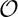
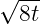
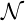

Motivation: The muon anomalous magnetic moment, or g - 2, will be measured by the E989 experiment at Fermilab to the one-per=mille precision level and thus offers an exceptional opportunity to test the standard model if theory can match this precision.
Long term goal: The Muon g-2 Theory Initiative aims to provide a consensus theory value at the same level of precision as the E989 experiment. Only QCD, or hadronic, contributions need improvement to reach this goal.
Method: Lattice calculations of correlation functions in QCD for the hadronic vacuum polarization (HVP) (two-point) and hadronic light-by-light scattering (HLbL) (four-point) are combined with perturbative QED at O(α2) and O(α3), respectively, to obtain the leading hadronic contributions.
Timeline: [last updated May 2023]
2021 Muon g - 2 Theory Initiative whitepaper [1] released with consensus Standard Model Value based on data-driven HVP and data-driven+lattice HLbL contributions.
2021 E989 announces first results with 0.48 ppm precision. Combined with BNL 821 (0.54 ppm), yields 4.2 standard deviation discrepancy with theory.
2021 BMW collaboration computes HVP contribution to 0.75%, consistent with experiment.
2022 USQCD groups Fermilab Lattice/HPQCD/MILC and RBC/UKQCD, χQCD, Aubin et al., and several groups from Europe obtain agreement on the HVP intermediate window which is four standard deviations discrepant with the data-driven value.
2023 Several groups to update total HVP contribution, including isospin corrections, with sub-percent errors.
2023 RBC updated HLbL contribution, reaching 12% error.
2023 E989 to announce run 2 and 3 combined result, improving precision by a factor of two.
2024 RBC to reduce error on HLbL contribution by a factor of two.
2024-25 RBC/UKQCD and FHM reach 1-2 per-mille goal on HVP contribution.
2025-26 E989 releases final result with expected precision of ~ 1.4 ppm
Motivation: B-flavor physics offers excellent opportunities for stringent tests of the Standard Model, tests that may lead to the discovery of new physics. In conjunction with refined experimental results, precision lattice-QCD calculations yield precise values of the CKM matrix elements, allowing checks of CKM unitarity and tests of lepton universality. Measurements of rare semileptonic B-meson decays (such as B → πℓ+ℓ-, B → Kℓ+ℓ-) are promising channels for new-physics searches because their rates are suppressed in the Standard Model.
Long term goal: Lattice-QCD calculations go hand-in-hand with experiment. Thus the long-term goal is to keep pace with the improving experimental precision of each quantity under study.
Method: Most calculations work with a combination of hadronic two- and three-point functions, measured at several lattice spacings and quark masses, and with a variety of current operators.
Timeline: [last updated May 2024]
2014 Calculation of leptonic B, Bs, D, and Ds decay constants to sub-percent accuracy.
2015 First measurement by CMS/LHCb of the decay Bs → μ+μ-.
2021 Calculation of R(D*) to 4%.
2022 Precise calculation of |V cs| with a QCD error comparable to the current experimental precision and of |V cd| with a QCD error twice that of experiment [2].
2024 Calculation of |V cb| via B → Dℓν and |V ub| via B → πℓν.
2024 Calculation of B → πℓ+ℓ- and B → Kℓ+ℓ- to 2%.
2026 LHCb End of Run 3 data taking. Beginning of Long shutdown 3.
2027 Calculation of |V cb| to the sub-percent level via B → D*ℓν.
2027 Calculation of R(D*) to 1%.
2027-28 Belle II Long shutdown 2.
Motivation: Semileptonic decays of charm and bottom baryons provide determinations of CKM matrix elements, tests of lepton-flavor universality, and constraints on flavor-changing neutral-current Wilson coefficients. The nonzero spins of the initial and final-state baryons make the decay amplitudes sensitive to all possible operator structures appearing in the weak effective Hamiltonian and provide a large number of angular observables that can be used to disentangle these structures.
Long term goal: Using lattice QCD, calculate the form factors for all heavy-baryon semileptonic decays whose decay rates are being measured at the Large Hadron Collider and other experiments. Improve the calculations over time to keep up with the increasing experimental precision.
Method: The relevant baryon two-point and three-point functions are computed for a wide range of source-sink separations to obtain good control over excited-state contamination. Light and strange forward propagators with smeared sources can be reused for multiple processes. The three-point functions use heavy-quark sequential propagators.
Timeline: [last updated May 2024]
2015: Calculation of the Λb → pℓ- and Λ b → Λcℓ- form factors and SM predictions for decay rates and R(Λc) [3]
2015 Determination of |V ub∕V cb| from Λb → pμ- and Λ b → Λcμ- decays by LHCb [4] using the form factors from Ref. [3]
2015 Measurement of the Λb → Λμ+μ- differential branching fraction and angular observables by LHCb [5]
2015 Measurement of the Λc → Λe+ν branching fraction by BESIII [6]
2016 Calculation of the Λb → Λℓ+ℓ- form factors and SM predictions [7]
2016 Measurement of the Λc → Λμ+ν branching fraction by BESIII [8]
2016 Calculation of the Λc → Λℓ+ν form factors and determination of |V cs| [9]
2017 Measurement of the shape of the Λb → Λcμ- differential decay rate by LHCb [10] in agreement with the LQCD prediction from Ref. [3]
2017 Calculation of the Λc → nℓ+ν and Λ c → pℓ+ℓ- form factors and SM predictions [11]
2017 Search for Λc → pμ+μ- by LHCb [12]
2018 Measurement of Λb → Λμ+μ- angular moments by LHCb [13]
2020 Calculation of the Λb → Λ*(1520)ℓ+ℓ- form factors and SM predictions [14]
2021 Calculation of the Λb → Λc*(2595, 2625)ℓ- form factors and SM predictions [15]
2021 Calculation of the Λc → Λ*(1520)ℓ+ν form factors and SM predictions [16, 17]
2022 Measurement of R(Λc) by LHCb [18]
2022 Measurement of the Λc → Λ*(1520)e+ν branching fraction by BESIII [19]
2022 Measurement of differential branching fraction and angular analysis of Λc → Λe+ν by BESIII [20]
2023 Measurement of the Λb → Λ*(1520)μ+μ- differential branching fraction by LHCb [21]
2023 Measurement of differential branching fraction and angular analysis of Λc → Λμ+ν by BESIII [22]
2023-2025 LHCb Run 3
2024 Calculation of Ξc → Ξℓ+ν form factors and SM predictions
2025 Calculation of Ξb → Ξℓ+ℓ- form factors and SM predictions
2025 Next-generation calculation of Λb → pℓ-, Λ b → Λcℓ-, and Λ b → Λℓ+ℓ- form factors and SM predictions
2025-2030 BESIII additional runs at the ΛcΛc threshold
2026-2028 LHCb Upgrade 1b
2029-2032 LHCb Run 4
Motivation: This is a precisely measured quantity that is highly sensitivity to new physics at an energy scale of 104 TeV.
Long term goal: Calculate KL - KS mass difference with a precision exceeding the current experimental value of 3.484 ± 0.007 × 10-12 MeV.
Method: Well understood lattice QCD technique with no recognized limitation to the control of all systematic errors. GIM cancellation is essential and treatment of the charmed quark using QCD perturbation theory introduces 36% errors. The lattice calculation is made difficult by the requirement of a lattice spacing smaller than the charm quark Compton wave length and a volume sufficiently large to accurate treat physical mass pions.
Timeline: [last updated May 2024]
2010 Accurate KTeV result [23].
2010-2014 Lattice QCD method devised and first results obtained. [24, 25].
2014-2021 First results with physical masses and 1∕a = 2.38 MeV obtained, presence of large discretization errors recognized [26, 27].
2021-2023 Discretization errors studied and evidence of a2 scaling found.
2023-2024 Calculation of the long-distance contribution to εK with 1∕a = 2.38 MeV will include extension of earlier ΔMK, calculation, increasing statistics.
2024-2026 Calculation of ΔMK with 1∕a = 2.8 GeV giving continuum limit result with 20% errors.
2027-2030 Move to 2 + 1 + 1 flavors and 1∕a = 3.0, 4.0 GeV and possibly 5 GeV with 10% errors.
Motivation: The indirect CP violation parameter ϵK is precisely measured and sensitive to BSM sources of CP violation at high energies. Its accurate standard model (SM) prediction provides a critical test of the KM theory of CP violation. While 95% of the SM prediction comes from short distance and is computed to an accuracy approaching 1%, there is a 5% contribution from long distances on the scale of the charm quark Compton wavelength and larger that requires a lattice QCD calculation.
Long term goal: Calculate the long-distance contributions to ϵK to 10% precision, sufficient to match or exceed the current experimental ϵK precision: |ϵK| = 2.228±0.011× 10-3 [28].
Method: Well understood lattice QCD technique with no recognized limitation to the control of all systematic errors. GIM cancellation is essential but a logarithmic divergence in the effective long-distance theory requires the perturbative calculation of a low energy constant which becomes systematically more accurate as the matching scale is increased above the charm quark mass.
Timeline: [last updated May 2023]
2000 KTeV and NA48 measurements of ϵ′.
2014-2017 Lattice QCD method devised and first results obtained [29].
2023-2024 First calculation with physical quark masses but relatively coarse 1∕a = 2.38 GeV lattice spacing (combined with an extension of the ΔMK calculation with increased statistics).
2024-2026 Calculation including ΔMK with 1∕a = 2.8 GeV giving continuum limit result with 20% errors.
2027-2030 Move to 2 + 1 + 1 flavors and 1∕a = 3.0, 4.0 GeV and possibly 5 GeV with 10% errors.
Motivation: Highly sensitive to new sources of CP that may explain the matter/antimatter asymmetry in the observable Universe. Experimental result with (10%) precision already available.
Long term goal: Calculate ϵ′ to a precision exceeding the current 10% experimental value.
Method: Lattice calculation of K → ππ matrix elements using 3-flavor weak effective theory in finite-volume allows extraction of infinite-volume amplitudes, A2 & A0, through Lellouch-Lüscher methods. Antiperiodic (A2) and novel “G-parity” (A0) boundary conditions (BCs) ensure dominance in signal of physical, energy-conserving decay. Non-perturbative renormalization at high energies minimizes systematic error in matching to perturbation theory describing weak interaction physics. Vacuum contributions to A0 require large statistics to adequately resolve. Future calculations aim to reduce systematic errors by incorporating electromagnetism and isospin-breaking effects, and an active charm quark.
Timeline: [last updated May 2023]
1999 First definitive observations of kaon direct CP-violation at KTeV (FermiLab) and NA48 (CERN).
2001 Final NA48 experimental result published [30].
1985-2002 Early lattice calculations using quenched QCD and chiral perturbation theory (ChPT) obtained results with large, uncontrolled systematic errors.
2004 Lattice calculation with dynamical QCD and ChPT [31]. Large systematic errors due to ChPT discouraged continued usage of this approach.
2011 Final KTeV experimental result published [23]. Combining experimental results gives current, best determination Re(ϵ′∕ϵ) = 16.6(2.3) × 10-4.
2011 Development of lattice approach for computing K → ππ decays directly [32].
2015 First continuum-limit calculation of A2 [35]. First ab initio, physical calculation of A0 and ϵ′ using G-parity BCs [36].
2020 Improved calculation of A0 and ϵ′ with G-parity BCs obtained substantially smaller statistical errors and better control over systematic errors [37]. This, latest result agrees with experiment but has ~4× the total error.
2020-2024 Repeat calculation of A0 on finer lattices to reduce/remove (12%) discretization systematic error.
2020-2026 Develop new methods to incorporate electromagnetism and isospin-breaking effects, reducing dominant (23%) systematic error.
2024-2026 Develop approach to incorporating active charm quarks with controlled discretization errors, reducing an (12%) systematic error.
2026-2031 Improved measurements employing new approaches, aiming to match/exceed experimental precision by end of Snowmass ’21 period. Potential discovery of tension between experiment and Standard Model may lead to new generation of kaon experiments.
Motivation: Precise SM prediction of ε′, the measure of direct CP violation in K → ππ decay, which is very sensitive to new physics.
Long term goal: Calculate Re(ε′∕ε) with a precision exceeding the current experimental value of 1.66(23) × 10-3, which roughly corresponds to 10% precision of A 0, the decay amplitude with isospin-0 final state.
Method: Well understood lattice QCD technique with no recognized limitation to the control of all systematic errors. The K → ππ matrix elements with the physical kinematics are to be extracted by using the well developed Generalized eigenvalue problem (GEVP) method [38, 39]. The Lellouch-Lüscher formalism [40] has been used to relate finite- and infinite-volume two-pion states in isospin-symmetric calculations but needs to be extended for introduction of electromagnetism, which is expected to give a significant (O(20%)) impact on ε′ but has been absent from earlier lattice calculations. Effects of the charm quark and naive discretization effects, which are also significantly uncertain for achieving our precision goal at this point, are to be both reduced by calculating on finer lattices.
Timeline: [last updated May 2023]
1999 First definitive observations of kaon direct CP-violation at KTeV (FermiLab) and NA48 (CERN).
2001 Final NA48 experimental result published [30].
1985-2002 Early lattice calculations using quenched QCD and chiral perturbation theory (ChPT) obtained results with large, uncontrolled systematic errors.
2004 Lattice calculation with dynamical QCD and ChPT [31]. Large systematic errors due to ChPT discouraged continued usage of this approach.
2011 Final KTeV experimental result published [23]. Combining experimental results gives current, best determination Re(ε′∕ε) = 16.6(2.3) × 10-4.
2011 Development of lattice approach for computing K → ππ decays directly [32].
2015 First continuum-limit calculation of A2 [35]. First ab initio, physical calculation of A0 and ε′ using G-parity BCs [36].
2020 Improved calculation of A0 and ε′ with G-parity BCs obtained substantially smaller statistical errors and better control over systematic errors [37]. This, latest result agrees with experiment but has ~4× the total error.
2023 Excited two-pion state that corresponds to the final state of energy-conserving K → ππ decay with periodic boundary conditions (PBC) successfully extracted [41]. First PBC result for ε′ with a-1 = 1.02 GeV going to be released (paper almost ready). It agrees with experiment and the G-parity result, but the precision is worse due to fewer configurations and coarser lattice used.
2022-2024 Continue PBC calculations with more configurations and on a finer lattice of a-1 = 1.38 GeV to obtain a more precise result with reduced statistical and discretization errors.
2020-2026 Develop new methods to incorporate electromagnetism and isospin-breaking effects, reducing dominant (20%) systematic error. (See item below.)
2024-2026 Repeat calculations of A0 on even finer lattices a-1 = 1.7, 2.3, 2.7 GeV.
2026-2030 Improved measurements including isospin-breaking and electromagnetic corrections, aiming to match/exceed experimental precision. Potential discovery of a tension between experiment and the SM may prompt a new generation of ε′ experiments.
Motivation: Because of the ΔI = 1∕2 rule, the isospin breaking corrections to the direct CP violating parameter ϵ′ are enhanced by a factor of 20, increasing their usual 1% scale to potentially 20% and making the uncertainty in these corrections one of the dominant errors in the current standard model prediction of ϵ′.
Long term goal: Calculate the isospin breaking corrections to ϵ′ to 10% accuracy removing this as a source of error in the prediction of ϵ′.
Method: The addition of electromagnetism adds substantial barriers to the already challenging lattice calculation of ϵ′: i) The I = 0 and I = 2 ππ final states are mixed and the three-particle ππγ state introduced making this a complicated, multi-channel decay. ii) Standard lattice formulations of QED have substantial finite-volume errors while the successful lattice methods to compute ϵ′ require that the calculation be performed in a volume of limited size. iii) Adding photons substantially increases the complexity of the quantities being computed, likely requiring the use of computer generated code.
Timeline: [last updated May 2023]
2000 KTeV and NA48 measurements of ϵ′
2017 Non-relativistic method to compute the Coulomb contribution to ϵ′ devised [42].
2019-2021 Generalize this non-relativisitic method to one that is fully relativistic [43].
2023-2024 Explore two strategies: i) Use lattice methods to evaluate the low energy constants needed in a chiral perturbation theory calculation [44] and ii) Extend the Coulomb-gauge approach to include transverse radiation. Begin a calculation based on the most ;promising method.
2024-2027 Calculation of isospin breaking contributions to ϵ′ to 30% accuracy.
2027-2030 Calculation of isospin breaking contributions to ϵ′ to 10% accuracy.
Motivation: The ΔS = 1 neutral-current rare decay KL → μ+μ- offers an order G F 2 test of the standard model in a process involving the exchange of two W bosons or a W and a Z boson. However, a background, two-photon exchange process of order αEM2G F contributes at a similar strength to this decay and therefore must be computed if a standard model prediction is to be compared with experiment.
Long term goal: Calculate this two-photon exchange contribution to 5% accuracy so that the standard model prediction for the important GF 2 process can be compared to experiment at the 5-10% precision comparable to the accuracy allowed by the current experimental branching ratio for KL → μ+μ-: BR(K L → μ+μ-) = 6.84 ± 0.11 × 10-9.
Method: This process is similar to the hadronic light-by-light scattering contribution to the muon. However, new methods are needed because the real-time, complex decay amplitude cannot be directly evaluated in Euclidean space. However, a well-controlled lattice QCD formulation of this calculation has been developed in which the largest uncontrolled error arises from the ππγ intermediate state whose contribution is expected to be no more than a few percent.
Timeline: [last updated May 2023]
2000 Accurate measurement of KL → μ+μ- branching ratio [45].
2018-2019 Lattice QCD method devised [46] and first results obtained for the simpler π0 → e+e- decay [47, 48].
2019-2022 Calculation extended to the ΔS = 1 process KL → γγ and first results obtained on a single gauge ensemble including only connected graphs with physical quark masses but for a relatively large lattice spacing. [49, 50]
2022-2024 First calculation of the two-photon exchange contribution to KL → μ+μ- on a single gauge ensemble including only connected graphs with physical quark masses but for a relatively large lattice spacing.
2025-2028 Extend the calculation to multiple lattice spacings and include disconnected graphs. Achieve 10% precision.
2028-2031 Employ increased statistics and improved methods to achieve the targeted 5% precision.
Motivation: Determine the quark masses and lattice spacing with QED corrections. Provide the basis for the QED correction for other quantities, such as hadronic vacuum polarization to muon g - 2 and meson (semi-)leptonic decay.
Long term goal: Calculate pion, kaon, and Omega baryon mass with the QED corrections to sub-percent level accuracy.
Method: We can use the infinite volume construction (IVR) method [51] to eliminate the 1∕L, 1∕L2, finite volume effects due to the massless photon interactions.
Timeline: [last updated May 2023]
2019 IVR method introduced
2020-2022 Pion mass splitting calculated with the IVR method.
2023-2026 Calculate the QED corrections to the mass of pion, kaon, and Omega baryon with the IVR method to sub-percent accuracy relative to the hadron mass.
Motivation: Determine the CKM matrix elements |V ud|, |V us| from the pion and kaon (semi-)leptonic decay processes.
Long term goal: Calculate pion and kaon decay width with the QED corrections to sub-percent level accuracy that matches or supersedes the current experimental accuracy.
Method: We can use the infinite volume construction (IVR) method [52] to eliminate the 1∕L, 1∕L2, finite volume effects due to the massless photon interactions.
Timeline: [last updated May 2023]
2019 IVR method introduced.
2020-2023 IVR method applied to the meson (semi-)leptonic decay.
2023-2026 Calculate the QED corrections to the leptonic decay width to an accuracy comparable to or better than the current experimental accuracy.
2027-2030 Calculate the QED corrections to the (semi-)leptonic decay width.
Motivation: The most precise lattice determination of the QCD strong coupling αs comes from the European Alpha collaboration but it should require independent and important cross-validation. Two USQCD groups are working toward this goal.
Long term goal: The QCD strong coupling αs, as defined at the Z-pole, is equivalent to the long term goal to determine ΛMS in physical units with very high precision. Credible and high precision cross-validation of this goal is motivated by the emergence of the required new lattice technology for the long-term goal.
Method: The application of gradient flow based scale-dependent renormalization of αs(μ = 1∕) at flow time scale t on lattices extended to infinite space-time provides a new technology, originally developed for beyond Standard Model studies. The application of the method in QCD shows the constant cross-fertilization between the different subfields of lattice studies.
Timeline: [last updated May 2023]
2016-2020 A new paradigm to calculate the nonperturbative renormalization group β function using the gradient flow renormalization scheme was developed by several USQCD groups. The continuous β function (CBF) method is particularly promising as it can be applied both in the weak coupling deconfined and strong coupling confining phases. The approach was tested in two-flavor QCD and in multiflavor QCD with ten and twelve massless flavors.
2022-2023 In the SU(3) Yang-Mills limit of quenched QCD it was shown by two USQCD groups that the new method is a competitive high-precision match to the earlier method of the Alpha collaboration [53, 54]. The combined high accuracy is in significant tension with any other lattice method.
2023-2024 Ongoing and future work of two USQCD groups is trying the reproduce the success of their quenched QCD results with two and three massless quark flavors in QCD to achieve the stated goal.
Motivation: Observation of putative exotic JPC bosonic states. Focus of GlueX@JLab, CLAS12@JLab, COMPASS@LHC.Kaon PID upgrade of GlueX and recommissioning starting 2020. Phase II including JLab Eta Factory underway through 2025. Possible Phase III run.
Long term goal: Determine the mass and decay modes of putative light quark hybrid and exotic mesons. Extract resonance parameters of meson and baryon spectrum. Guide experimental searches with predictions of decay couplings.
Method: Resonance spectrum extracted from scattering amplitudes computed from finite-volume energy spectrum. Cost driven by annihilation quark lines computed on many time-slices and computation of hadronic two-point functions featuring a large multi-hadron operator basis utilizing the variational method.
Timeline: [last updated May 2024]
2013 Isovector and isoscalar light quark meson and baryon spectrum computed with restriction to single particle basis [55]. Results featured in PDG.
2015 First computation of resonance parameters from coupled-channel scattering amplitudes of ππ∕K [56].
2019 Phenomenological extraction of π1 resonance from parameters from partial waves of η(′)π measured by COMPASS [57].
2022 First determination of full three-body relativistic scattering amplitude [58]
2022 Prediction for light-quark isovector JPC = 1-+ published [59].
2023 Upgrade of GlueX forward calorimeter.
2025 Putative light-quark hybrid meson multiplet resonance parameters.
2025 GlueX Phase II completed. Begin analysis of runs I and II.
2025 Possible Phase III GlueX run.
2027 GlueX results based on combined data through run II.
Motivation: The internal structure of QCD resonant states is poorly understood. Their study is a focus of GlueX@JLab, CLAS12 MesonX@JLab, LHCb@CERN, BESIII@Beijing.
Long term goal: Use electromagnetic probes to reveal the internal structure of resonant states, revealing potential multi-particle configurations through computation of physically relevant processes, like transition form-factors, or more complicated structures such as partonic content.
Method: Combines QCD spectroscopy program and hadronic structure programs. Infinite volume current matrix elements extracted from scattering amplitudes.
Timeline: [last updated May 2024]
2015 First computation of γπ → ππ form-factor [60].
2022 First computation of γK → Kπ form-factor [61] featuring multi-partial wave form-factors.
2024 Energy dependence of K∕ππ to vacuum transition
2024 J∕ψ → γη radiative decays with comparison to BESIII
2025 Multi-channel nucleon transition form-factors of vector and axial currents.
2025 Radiative transition form-factors of exotic isovector π1.
2026 GlueX electromagnetic branching fraction rates for exotic meson states.
Motivation: Experimental N* program in CLAS12@JLab, and strange quark hyperon resonances in CLAS12@JLab. Early LQCD spectroscopy calculations suggest rich spectrum of states - most of which have not been experimentally observed.
Long term goal: Fully resonance calculations of decay couplings of possible states, including potential hybrid baryon states identified through transition form-factors.
Method:
Timeline: [last updated May 2024]
Motivation: Nucleon charges gA,S,T arise in many low-energy description of nucleons. Flavor diagonal axial charges give the contributions of each quark flavor to the nucleon spin; tensor charges give the contribution of quark EDM to the nucleon EDM; and scalar charges give the pion-nucleon sigma term and strangeness content of the nucleon. Isovector charges give the axial charge gA, a fundamental low-energy constant. The scalar and tensor charges probe novel scalar and tensor interactions at the TeV scale and the tensor charge is also measured in transversity measurements at JLAB. From the matrix elements of 1-link operators, we extract the first moment of distributions, namely momentum fraction, and helicity and transversity moments. These results compare favorably with their extractions from PDFs.
Long term goal: To calculate each of these with sub-percent accuracy.
Method: All these require the calculation of connected and disconnected three-point functions comprising the insertion of appropriate quark bilinear operators between nucleon source and sink operators. During analysis, remove the excited state contributions from these correlation functions to get ground state matrix elements that are then decomposed into the desired charges. The calculation is repeated at multiple values of lattice spacing and pion mass and the results extrapolated to the physical point.
Timeline: [last updated May 2023]
2011–2019 Lattice results reach the robustness standard to be reviewed by FLAG and average values published.
2019-2023 Steady improvement in precision to reach few percent accuracy and get control over excited states. Possible resolution of the discrepancy between lattice estimate of the the pion-nucleon sigma term between lattice QCD and dispersive analysis published by the PNDME collaboration.
2023-2025 Continue to improve accuracy.
2030 Much higher precision analysis of neutron decay that would push the search for novel scalar and tensor interactions to the 10-4 level.
Motivation: The electromagnetic form factors of the nucleons are well measured experimentally from electron scattering off nuclei. There is still uncertainty in the calculation of the charge radius of the proton, i.e., a difference from scattering experiments versus muonic hydrogen. These data are far more precise compared to lattice results and for the foreseeable future will provide a benchmark against which to compare lattice results to and validate lattice methodology.
Long term goal: To determine the electromagnetic form factors of the nucleons to match experimental precision.
Method: First calculate three point functions comprising the insertion of the electromagnetic current with all allowed lattice momentum insertion between the nucleon source and sink operators. During analysis, remove the excited state contributions from these correlation functions to get ground state matrix elements that are then decomposed into the desired form factors. The calculation is repeated at multiple values of lattice spacing and pion mass and the results extrapolated to the physical point.
Timeline: [last updated May 2023]
2011–2021 Lattice results showed deviations from the Kelly parameterization of experimental data.
2021 NME results agree with Kelly parameterization of experimental data.
2021-2023 Calculations by various groups still show an uncertainty band of ≈ 10%.
2023-2025 NME and PNDME collaborations to reduce the uncertainty band to 3–5%
2030 EIC expected to start taking data.
Motivation: Any data on nucleon form factors in the range of momentum transfer 5-20 GeV2 will be important for understanding the transition between perturbative and nonperturbative QCD. Such data will also be illuminating for qualitative pictures of nucleons in terms of gluon-dressed constituents or diquarks.
Long term goal: Ab initio calculation of such form factors using QCD on a lattice, done with fully controlled systematic errors, is necessary to fill the gap between theory and ongoing experiments. Comparison to experimental results will also reveal and help address any systematic uncertainties in calculations with high-momentum hadron states on a lattice such as calculations of PDFs/GPDs using LaMET and similar approaches.
Method: We employ standard lattice techniques together with some methods (e.g., momentum-boosted states) to improve overlap with large-momentum nucleon ground state. We use Breit frame kinematics to reach maximal possible momentum transfer.
Timeline: [last updated May 2023]
2016-2023 We have performed calculations of electric and magnetic form factors at three values of lattice spacing and pion masses down to 170 MeV. We have found qualitative agreement in the dependence of the proton form factor ratios GEp∕GMp and F1p∕F2p. Some agreement is also evident in the neutron case for GEn∕GMn. While this agreement is reassuring, the values of the form factors themselves overshoot experiment by factor 2-2.5 for momenta Q2 above 4 GeV2. This is probably due to large contributions of the excited states, since we observe very little dependence on the lattice spacing and the pion mass.
2023-onward We plan to increase the statistical precision and extend the range of nucleon correlators in order to improve the control over excited states. In addition, we plan to study the so-called disconnected diagrams (contributions to the isoscalar (p + n) channel) and the leading-order O(a) discretization corrections.
Relevant experiments have been performed at CEBAF (JLab@12 GeV) to measure electromagnetic form factors up to 18 GeV2. Results for the magnetic form factor of the proton have been published.
Motivation: The axial form factors of the nucleons are not well measured experimentally and are needed to few percent accuracy to calculate the neutrino-nucleus cross-section for experiments such as DUNE, T2K, etc., to reach their science goals. Large scale simulations of lattice QCD are the current best method to determine these directly from QCD and the methodology for the calculations is mature.
Long term goal: To determine the axial form factors of the nucleons to a few percent
Method: First calculate three point functions comprising the insertion of the axial vector and pseudoscalar currents with allowed lattice momentum insertion between the nucleon source and sink operators. During analysis, remove the excited state contributions from these correlation functions to get ground state matrix elements that are then decomposed into the desired form factors. The calculation is repeated at multiple values of lattice spacing and pion mass and the results extrapolated to the physical point.
Timeline: [last updated May 2023]
2017 Demonstration that the standard method of analysis gives form factors that do not satisfy PCAC.
2019 Cause of failure identified to be the contributions of multihadron (Nπ,Nππ,…) states and a data driven method to remove them identified.
2021-2023 Calculations done by a number of lattice collaborations that agree within 1σ and give results with an uncertainty band of ≈ 10%.
2023-2025 NME and PNDME collaborations to reduce the uncertainty band to 3–5%
2030 DUNE expected to start taking data.
Motivation: Explore feasibility of nucleon-matrix-element calculations with staggered valence quarks, motivated by the neutrino-scattering experiments listed in the previous item.
Long term goal: Axial charge gA and axial form factor with the HISQ action for valence quarks, using MILC’s 2 + 1 + 1-flavor ensembles.
Method: Staggered fermions have a more complicated symmetry structure than Wilson-like quarks (including domain-wall, twisted-mass, clover, …), making nucleon operators more complicated to construct. While we have solved this problem for the needed two- and three-point calculations, the approach does not turn out to enjoy the computational savings that staggered fermions provide for mesons.
Computing: Work on ensembles with a ≈ 0.15 and 0.12 fm were carried out on USQCD resources (FNAL LQ1, BNL Sklake, and BNL KNL), while work on ensembles with a ≈ 0.09 and 0.06 fm were carried out on LCF resources (NERSC Cori, XSEDE Stampede2, ALCF Theta).
Timeline: [last updated May 2023]
2019 Calculation of the nucleon mass at three spacings with physical quark mass [65]; at the time (and possibly still), this was the most precise calculation of the nucleon mass.
2021 Demonstration calculation of the axial charge gA on the physical-quark-mass HISQ ensemble with a ≈ 0.12 fm [66].
2023 Calculation of gA at four spacings (a ≈ 0.15–0.06 fm) with physical quark mass, with update to the nucleon mass.
2023 Demonstration calculation of the axial charge gA on the physical-quark-mass HISQ ensemble with a ≈ 0.12 fm [66].
Outlook: The all-HISQ approach to baryons seems not to be cost-effective enough to justify the overhead in coding and analysis.
Motivation: The CP violation in the CKM quark mixing is too small to generate the observed baryon asymmetry in the observed universe. BSM models have new sources of CP violation, each of which contribute to nEDM. These interactions and their couplings in BSM theories are, using tools of effective field theories, written in terms of low energy operators composed of quark and gluon fields. The matrix elements of these effective operators are only known within a factor of 10 uncertainty. Lattice QCD provides the best method to determine them with control over all systematics. Knowing these matrix elements, one can use the bound [eventually value] of nEDM to constrain the CP violating couplings in various BSM theories. These viable BSM models can then be analyzed to determine if they are further consistent with the generation of the observed baryon asymmetry.
Long term goal: To calculate the matrix elements of all low energy effective operators of dimension six and smaller that contribute to the nucleon electric dipole moment.
Method: This requires calculating three- and four- point functions comprising the insertion of the electromagnetic current with finite CP violating operators with finite momentum insertion between the nucleon source and sink operators to be able to take the zero momentum limit. During analysis, remove the excited state contributions from these correlation functions to get ground state matrix elements that are then decomposed into the desired form factors of which F3 is the desired CP violating one from which dn = F3(0)∕2MNϵ, where ϵ is the coupling strength of the operator. Repeat the calculation at multiple values of lattice spacing and pion mass and extrapolate the results to the physical point.
Timeline: [last updated May 2023]
Pre 2017 The first lattice calculations set up the framework but did not include a phase in the definition of the nucleon spinor, which lead to wrong results.
2017-2023 Focus on error reduction in the extraction of F3 parameterization of experimental data. Understand and remove the contributions of multihadron (Nπ,Nππ,…) states.
2021-2023 Calculations from a number of collaboration for the Theta term with different levels of control over signal and systematics.
2023-2025 To get a robust signal at near physical quark masses.
2030 Expect a factor of 10 reduction in the upper bound on neutron EDM and maybe a value.
Motivation: Neutron and proton electric dipole moments (EDMs) are the most precise probes of CP violation in QCD and beyond-the SM physics. The latter is important for finding plausible scenarios of baryogenesis and understanding the origin of the nuclear matter. Knowing the magnitude of neutron EDM induced by different sources of CP violation is crucial to using experimental bounds to constrain new types of CP-violating interactions.
Long term goal is finding contributions to nucleon EDMs of effective quark-gluon CPv operators that may be induced by new physics. These effective CPv interactions are quark EDMs, quark and gluon chromo-EDMs, QCD theta-term, and 4-quark interactions.
Method: We use the background-field method in which the energy (mass) of a nucleon is shifted due to induced EDM. This method may have comparative advantage compared to computing electric dipole form factors that have to be extrapolated to the forward limit. In addition, it may be simpler to implement in the case of four-quark operators.
Timeline: [last updated May 2023]
2016-2023 We have successfully demonstrated that the background field method is at least comparable in precision to the traditional method of computing neutron EDM induced by the QCD theta-term.We have implemented sophisticated sampling techniques combining variable precision and low-lying eigenmode approximation of the Dirac equation. We have performed calculation of the neutron EDM using chirally-symmetric fermions.
2023-onward We plan to extend our calculations of theta-QCD-induced neutron EDM to the physical point, where the low-eigenmode approximation is expected to be even more efficient. We also plan to start calculations involving 4-quark CPv operators.
Experiments are expected to improve bounds on neutron EDMs within the current decade. It is particularly important to improve our theoretical knowledge of neutron EDM contributions in the same time frame in order to constrain proposed models of novel CP-violating interactions and baryogenesis scenarios.
Motivation: Studying the 3D-structure of hadrons and understanding the partonic origin of hard exclusive processes are among the goals of the Jefferson Lab 12 GeV program and the future Electron-Ion Collider (EIC). The pion and kaon, as the pseudo-Goldstone modes of QCD, play a critical role in understanding the physics of asymptotic freedom and chiral symmetry-breaking in QCD from the fundamental quark-gluon interactions.
Long term goal: First principles calculations of the pion and kaon distribution amplitudes and form factors with large momentum transfer to explore the transition from non-perturbative QCD to perturbative QCD. Precision calculations of the pion valence quark PDFs and GPDs, providing insights into the quark momentum fractions and 3-dimensional distributions in the pseudo-Goldstone bosons. Exploring the spin-dependent PDFs and 3-dimensional structure of nucleon.
Method: Calculation of pion/kaon form factors in the Breit frame with optimized quark smearing to achieve large momentum transfers. Computation of the quasi-DA, quasi-PDF, quasi-GPD, and quasi-TMD matrix elements within large-momentum hadron states to extract the light-cone parton distributions using large momentum effective theory and short distance factorization.
Timeline: [last updated May 2024]
2019 Calculation of the pion valence quark distribution with a 300 MeV pion mass from a fine lattice within the LaMET framework. [67]
2020 Calculation of the pion valence quark distribution with a continuum extrapolation using the LaMET and short distance factorization frameworks. [68]
2021 Calculation of the structural differences between the pion and its radial excitation. [69]
2021 Calculation of the pion form factors and charge radius with small momentum transfer at the physical point. [70]
2022 Calculation of the pion distribution amplitude at the physical point within the short distance factorization framework. [71]
2022 Calculation of the Bjorken-x dependence of the pion valence PDF with controlled systematics. [72]
2022 Calculation of the pion valence PDF with a continuum extrapolation, physical quark masses and NNLO matching. [73]
2022 Calculation of the Unpolarized PDF of nucleon. [74]
2023 Calculation of the Transversity PDF of nucleon. [75]
2024 Calculation of the kaon distribution amplitude at the physical point.
2024 First calculation of the pion form factors at the physical point with large momentum transfer.
2024 First calculation of the kaon form factors at the physical point with large momentum transfer.
2025 Calculation of pion TMDs with a 300 MeV pion mass.
2025 Calculation of pion GPDs with a 300 MeV pion mass.
2027 Calculation of pion GPDs at the physical point.
Motivation: A quantitative understanding of the internal structure of hadrons, including the distribution of charge, spin and mass, in terms of the quarks and gluons of QCD is a central goal of nuclear physics, and key to high-energy physics through exposing the Standard Model and Beyond-the-Standard Model interactions of the quarks and gluons within them. Flagship experiments at JLab12 GeV focused on isovector GPDs, and understanding the gluonic contributions to hadron structure a emblematic problem at the future EIC.
Long term goal: First principles calculations of the key measures of one-dimensional and three-dimensional hadron structure encapsulated in the Parton Distribution Functions (PDFs), Generalized Parton Distribution Functions (GPDs) and Transverse-Momentum-Dependent Functions (TMDs). Performing computations of a precision that can both confront experiment, and complement experiment in global analysis.
Method: Computation of the three-point matrix elements of quark- and gluonic operators, and their analysis to provide Bjorken-x-dependent distributions within the short-distance-factorization/pseudo-PDF framework. Exploitation of the “distillation” both to fully sample lattices, and provide control over excited-state contributions.
Timeline: [last updated May 2023]
2017 First calculation of the nucleon unpolarized PDF within the pseudo-PDF framework [76].
2020 Calculation of unpolarized nucleon PDF at close-to-physical quark masses [77].
2021 Calculation of the Unpolarized Gluon Distribution in the Nucleon [78].
2022 Calculation of the gluon helicity distribution in the nucleon [79]
2022 Combined global analysis of lattice QCD and experimental data to compute the Pion PDF [80].
2024 Calculation of the isosinglet unpolarized and polarized nucleon PDF.
2024 First Calculation of the nucleon Generalized Parton Distributions within the pseudo-PDF framework.
2027 E12-06-119 “Deeply Virtual Compton Scattering with CLAS at 11 GeV”
2027 SOLID detector at Jefferson Lab
2030 Electron-Ion Collider at BNL.
Motivation: TMDs constitute one of the pillars of the description of hadron structure; they encode the three-dimensional distribution of momenta among the partons inside a hadron. They enter the cross sections of processes such as semi-inclusive deep inelastic scattering (SIDIS) and the Drell-Yan process. Their determination constitutes a focus of both the current JLab 12 Gev program as well as the experimental program at the EIC.
Long term goal: Calculation of TMD observables to complement and augment phenomenological analyses of experimental data, and to help guide follow-on experimental campaigns.
Method: Lattice QCD evaluation of hadronic matrix elements of bilocal operators containing staple-shaped gauge connections. Extraction of invariant amplitudes that determine ratios of Fourier-transformed TMDs.
Timeline: [last updated May 2023]
2011 First calculation of Sivers and Boer-Mulders observables.
2015 Extrapolation of a TMD observable to the physical, infinite rapidity difference limit.
2017 Investigation of universality of lattice TMD observables.
2019 Evaluation of TMD observables at the physical pion mass.
2022 Completion of leading-twist set of nucleon TMD observables by including longitudinal nucleon polarization.
2024 Evaluation of gauge connection structures beyond staple shape, relevant for processes beyond SIDIS and Drell-Yan.
2024 Evaluation of longitudinal momentum fraction x-dependence of the Sivers shift.
2027 Inclusion of Lattice TMD observables with controlled systematic uncertainties in global analyses of experimental data.
Motivation: The Collins-Soper kernel relates the transverse-momentum-dependent distributions (TMDs) of hadrons at different energy scales, which is a crucial non-perturbative input for global analyses to understand the 3D structure of the proton.
Long term goal: Calculate the Collins-Soper kernel at physical pion mass with a ~ 10% precision, which can be compared to the experimental results from the Electron-Ion Collider.
Method: Lattice calculation and renormalization of the matrix elements of quasi-TMD correlators in a highly boosted hadron state. The quasi-TMD correlators are defined from quark and gluon bilinear operators with a staple-shaped Wilson line extending to the longitudinal direction as the hadron momentum. At large hadron momentum, the quasi-TMD can be factorized into the physical TMD, and the anomalous dimension of their momentum evolution can be perturbatively matched onto the Collins-Soper kernel. Apart from the forward matrix elements for quasi-TMDs, we can also use the TMD wave function, which is a vacuum to hadron amplitude of the quasi-TMD correlator, to extract the Collins-Soper kernel.
Timeline: [last updated May 2024]
2019 Study of the renormalization and mixing of the staple-shaped quasi-TMD correlator on the lattice [81].
2020 First exploratory calculation of the quark Collins-Soper kernel on a quenched lattice ensemble from the quasi-TMDs [82].
2021 First lattice calculation of the quark Collins-Soper kernel with dynamical fermions at unphysical pion mass of around 500 MeV from the quasi-TMDs [83].
2022-2023 Lattice calculation of the quark Collins-Soper kernel at the physical point from the quasi-TMD wave functions [84].
2024 Continuum extrapolation of the quark Collins-Soper kernel at the physical point, with a precision that can distinguish phenomenological models in the non-perturbative region [85].
2024-2026 Develop and implement the method to calculate the gluon Collins-Soper kernel.
2024-2026 Lattice calculation of the quark TMD soft factor.
Motivation: The proton spin puzzle is a touchstone of our understanding of proton structure. Compared to the parton spin contributions, the parton OAM contributions are less straightforward to access directly, requiring the evaluation of either generalized transverse momentum-dependent parton distribution (GTMD) observables or twist-three generalized parton distribution (GPD) observables. Lattice QCD provides an avenue to obtain these observables.
Long term goal: Evaluation of GTMD and twist-three GPD observables to determine parton OAM in the proton.
Method: Lattice QCD evaluation of hadronic matrix elements of bilocal operators containing both straight and staple-shaped gauge connections; these determine the Ji and the Jaffe-Manohar definitions of parton OAM, respectively.
Timeline: [last updated May 2023]
2016 First evaluation of both Ji and Jaffe-Manohar quark OAM from GTMD observables.
2018 Control of systematic uncertainties in the momentum transfer dependence of the relevant GTMD through a direct derivative method, leading to quark angular momentum sum rule being satisfied.
2021 Evaluation of quark spin-orbit correlations in the proton.
2023 Evaluation of quark OAM in the proton via twist-three GPDs.
2024 Enhancing control of systematic uncertainties in Lattice QCD evaluations of quark OAM; quark mass dependence, excited state effects.
2027 Evaluation of gluon OAM.
Motivation: The gravitational form factors (GFF) of the energy momentum tensor (EMT) encompass the issues of spin and mass decompositions. They also contain information about the pressure distribution, the sigma terms, and total pressure associated with the trace anomaly.
Long term goal: Provide Standard Model predictions of the gravitational form factors of hadron energy-momentum tensor. These results can be confirmed by the experimental GPD and photo-production of J/Ψ at the threshold.
Method: Lattice calculations with grid source propagators and low-mode substitution (LMS) of hadronic two- and three- point functions using domain-wall fermion ensembles and valence overlap fermions. The form factors are measured at several lattice spacings and quark masses, and with a variety of current operators.
Timeline: [last updated May 2023]
2021 Lattice calculation of nucleon energy-momentum tensor form factors using overlap fermions, including calculation of momentum fractions and angular momentum fractions for the quarks and glue.
2022-2023 Calculation of the gluon trace anomaly form factors for pion, ρ meson and nucleon using domain-wall fermion ensemble and valence overlap fermions at near-physical pion mass.
2024-2027 Calculations of the full gravitational form factors of the hadron EMT, i,e, A, B, D, and quark scalar form factors in addition to the trace anomaly FF.
Motivation: The formalism of hadronic tensor in lattice QCD [86, 87] offers an opportunity to directly evaluate the cross-sections of neutrino-nucleon scattering in the elastic and resonance regions and potentially in the shallow- and deep-inelastic regions as well. The lattice calculation of the neutrino-nucleon scattering cross-sections can be an input for the neutrino-nucleus scattering calculation. The latter is needed for neutrino experiments at DUNE to provide theoretical constraints when analyzing data from neutrino oscillation experiments.
Long term goal: Calculate precise neutrino-nucleon scattering cross-sections in all the neutrino energy regions from the threshold to 7 GeV. This should help improve the theoretical understanding of the neutrino-nucleus scattering cross-sections and maximize the discovery potential of neutrino oscillation experiments.
Method: Calculation of matrix elements using four-point correlation functions with vector and axial two-current insertions to the nucleon propagator at different space-time positions to obtain the Euclidean hadronic tensor. Bayesian reconstruction will be employed to solve the inverse problem and obtain the spectral decomposition for the hadronic tensor in the Minkowski space.
Timeline: [last updated May 2023]
1993,1999 The hadronic tensor was formulated in the Euclidean path-integral formalism [86]. A new parton degree of freedom – connected sea partons, was discovered and the operator product expansion was obtained [87].
2017 The parton evolution equation is generalized to include the connected-sea partons [88].
2019 First exploratory calculation of the hadronic tensor was carried out using Backus-Gilbert, Maximum Entropy and Bayesian Reconstruction methods are studied in solving the inverse problem [89].
2020 Plenary talk at 2019 Lattice Conference which checked the higher-twist contribution and verified that the hadronic tensor matrix element for the elastic scattering is the product of elastic form factors from the three-point correlators [90].
2020 It is shown that the parton degrees of freedom from the hadronic tensor are the same as those in the quasi- and pseudo-PDFs [91].
2021 The connected-sea partons have been incorporated in the global analysis of PDFs for the first time [92]
2023 Calculation of nucleon elastic and N → N* transition form factors and corresponding longitudinal helicity amplitude are completed. A manuscript is being prepared for publication.
2024 Calculation of the Δ contribution in the neutrino-nucleon scattering. Explore large momentum transfer to study the shallow- and deep-inelastic scattering regions.
2025-2026 High statistics determinations of the resonance contributions on multiple ensembles and exploration of the unpolarized, longitudinal and transversely polarized PDFs.
2027- Exploration of generalized parton distribution functions through off-forward matrix elements.
Motivation: The resonant structure of hadrons in kinematic regions with many open channels is a difficult non-perturbative problem in QCD with relevance to accelerator-based neutrino experiments like DUNE as well as the experimental program at the electron-ion collider. Recent theoretical and algorithmic advance in lattice QCD make calculations of the hadronic tensor for fully inclusive resonant scattering a realistic possibility for the first time.
Long term goal: Benchmarking lattice QCD techniques against the well-measured electromagnetic resonant structure functions of the nucleon. QCD predictions for the axial resonant structure functions of the nucleon, to ground our understanding of neutrino-nucleus scattering in QCD.
Method: Proof-of-concept calculations are underway using the simpler system of the pion instead of the nucleon. The calculation involves four-point correlations functions, which are analytically continued from Euclidean space using novel spectral reconstruction techniques.
Timeline: [last updated May 2024]
2017 Modern theoretical understanding of fully inclusive scattering via smeared spectral functions. [93]
2019 Algorithm for practical spectral reconstruction. [94]
2023 Improved algorithm for spectral reconstruction, with rigorously quantified systematic uncertainties.
2021-2024 Ongoing proof-of-concept calculations for the electromagnetic hadronic tensor of the pion underway.
2027 First QCD calculations of the hadronic tensor of the nucleon.
Motivation: Nuclear forces at high density are relevant for understanding the internal structure of neutron stars and the dynamics of their mergers. Determinations of these forces are relevant to astrophysical observations from NICER and LIGO/Virgo and in experiments aiming to constrain these interactions such as CREX/PREX at JLab.
Long term goal: Fundamental understanding of few-nucleon interactions from QCD to provide a predictive framework for nuclear physics.
Method: Scattering amplitudes computed from finite-volume energy spectrum. Computation of hadronic two-point functions using a large set of multi-hadron operators.
Timeline: [last updated May 2023]
2006 First QCD calculation of NN interactions.
2012 Calculation of hyperon-nucleon scattering.
2013 First calculation of nuclear and hypernuclear bindings up to A = 4.
2019 Development of automatic code-generation for multi-nucleon correlation functions, enabling much more sophisticated
2021 Large variational study of NN interactions.
2025 Three-nucleon spectrum determined using large operator set.
2027 Fully-controlled calculations of hyperon-nucleon scattering phase shifts
Motivation: Much is known about the structure of nuclei, but other aspetcs are mysterious when viewed from the point of view of QCD. The recent interest in short-range correlations in nuclei and their relation to the EMC effect has spawned many experiments at JLab and elsewhere; having a QCD understanding of this physics is crucial.
Long term goal: Describe nuclear structure from the underlying Standard Model.
Method: Matrix elements corresponding to appropriate operators computed using background field methods.
Timeline: [last updated May 2023]
2014 First QCD calculation of magnetic moments and polarizabilities of light nuclei.
2015 QCD calculation of the slow-neutron capture cross section, np → dγ.
2018 Calculation of gluon momentum fraction in light nuclei.
2020 Calculation of the quark momentum fraction in light nuclei including 3He.
2025 Calculation of EM form factors of nuclei.
Motivation: Many intensity-frontier experiments use nuclei as targets in order to increase cross-sections. These experiments include dark-matter direct-detection experiments such as XENON-100, neutrino-nucleus interaction experiments such as DUNE and current and future neutrinoless double-β decay search experiments including nEXO.
Long term goal: Provide Standard Model nuclear matrix elements for interpretation of intensity frontier experiments.
Method: Calculation of nuclear matrix elements using three-point correlation functions.
Timeline: [last updated May 2023]
2016 Calculation of neutrinoful double-β decay matrix elements revealing importance of isotensor axial polarizability.
2018 Calculation of scalar matrix elements in light nuclei relevant for dark matter interactions
2021 Calculation of the axial charge of the triton, providing two-body EFT input for neutrino-nucleus scattering.
2024 Calculation of short- and long-distance neutrinoless double-β decay matrix elements for nn → pp.
Motivation: The aim of ultra-relativistic heavy ion collisions is to study strongly interacting matter at high temperatures. There is a large ongoing experimental program at RHIC in BNL and LHC at CERN dedicated to this. Lattice QCD calculations provide the necessary input for theoretical interpretation of heavy ion experiments.
Long term goal: The goal of lattice QCD calculations is to map out the QCD phase diagram as function of the temperature at zero and moderately high baryon density, calculate the QCD equation of state and estimate spectral functions that are needed for heavy flavor and electromagnetic probes of the matter produced in ultra-relativistic heavy ion collisions.
Method: Calculations are performed using highly improved staggered quark (HISQ) action in 2+1 flavor QCD with physical strange quark mass, ms and various light quark masses, ml, around its physical value of ml = ms∕27. In some case calculations are performed for larger value of ml. For the calculations of the spectral function sometimes values ml = ms∕5 are used while for exploring the chiral aspects of the transition smaller than physical values of ml are used.
Timeline: [last updated May 2023]
2011-2014 The HotQCD collaboration successfully determined the chiral crossover temperature and QCD equation of state in the continuum limit.
2014-2021 The HotQCD collaboration determined the chiral crossover temperature, the QCD equation of state and fluctuations of conserved charges at non-zero density, which was essential input for the RHIC BES program. In particular, these results have been used by the BEST DOE topical collaboration.
2019-2023 Calculations of the bottomonium properties and the heavy quark potential have been performed at nearly physical light quark masses on lattices with temporal extent Nτ = 12. The heavy quark diffusion coefficient has been calculated in 2+1 flavor QCD for the first time at ml = ms∕5. All these calculations are important for the interpretation of the open and hidden heavy flavor production in heavy ion experiments at RHIC and LHC, including START, sPHENIX, ALICE, CMS and ATLAS.
2023-2027 Our goal in the future is to calculate quarkonium in-medium properties and the heavy quark diffusion coefficient in the continuum limit for physical light quark masses.
2023-2035 Heavy flavor probes will be one of the driving themes of heavy ion experiments at RHIC and LHC. The sPHENX and STAR experiments will collect new data in 2023-2025. The analysis of these data will probably last till 2028. The LHC heavy ion experiments are planned to run till at least 2035.
Motivation: Gauge theories with massless fermions and large number of flavors, or in higher fermion representations, become near-conformal with the signal of an emergent dilaton. The effective field theory description of this dilaton is an important challenge to understand as one of the most important clues to the conformal window.
Long term goal: Understanding the viability whether the observed 125 GeV Higgs boson can be understood as an excitation of a new strongly interacting sector
Method: Large scale numerical simulations of (near)- conformal gauge theories or theories close to an IRFP. The effective field theory description of these systems is an important challenge to understand as one of the most significant clues to the conformal window.
Timeline: [last updated May 2023]
2014-2022 USQCD groups were involved in studies of several possible composite Higgs systems: SU(3) gauge with 8 fundamental flavors, the SU(3) two flavor sextet model, the SU(3) mass-split system with four light and six heavy fermions, and several SU(4) gauge models with fermions in multiple representations [95, 96, 97, 98].
2023-2024 Each of the above systems are still under active investigation. In many cases the exact nature of the infrared limit is still uncertain. Further investigations with improved actions that allow the reach of stronger couplings where the conformal fixed point (whether it is below or above the system investigated) can be reached.
2024-2027 Beyond investigating a potentially light scalar particle, many phenomenologically relevant questions remain. A partial list is given here:
Large baryon anomalous dimension is essential for partial compositness. So far this has been done only in a 2-representation model. [97]
Updated S and new T parameter calculations in composite Higgs models.
Compute the scalar form factor of the isosinglet meson in composite Higgs theories. Two methods are available from lattice QCD: direct calculation of the scalar form factor or indirectly using the Feynman-Hellman theorem.
New vector or scalar resonances in diboson production would be very strong evidence of Higgs sector compositeness. Perform calculations of W+Z and W+W- scattering in a composite Higgs theory.
Motivation: Understanding the nature of SU(3) gauge theories and how infra-red fixed points in many flavor systems arise are important for composite Higgs models. The anomalous dimension of composite fermions is needed to explain fermion mass generation of Standard Model fermions.
Long term goal: Studying SU(N) gauge fermion-systems and explore novel gradient flow methods
Method: Generation dynamical gauge field configurations with SU(3) gauge group and Nf fundamental flavors. Calculation of the step-scaling function, the discrete analog of the renormalization group (RG) β function. In addition we explore the connection of gradient flow to the RG flow and propose a new method to calculate the continuous β function, extract anomalous dimensions, and obtain renormalization Z factors
Timeline: [last updated May 2023]
2016-2020 Theoretical development of gradient flow renormalization scheme as described under ”QCD Λ parameter …” section, and the continuous β function (CBF) method [99, 100].
2019-23 Development of a new renormalization scheme for composite fermions [101]
2023-27 Investigate near conformal systems and establish the critical flavor where the conformal window opens. Calculate anomalous dimensions for mesons and baryons. These investigations tie in closely with the bootstrap study of conformal systems.
Motivation: Observed galaxies today do not agree with formation models based on ΛCDM: cusp-core problem, bugleless disks, …Recent JWST observation of massive galaxies in early universe (2208.01611) also a problem. Modifying ΛCDM adding dark matter self-interaction may solve these problems.
Long term goal: Compute composite dark-matter self-interaction.
Method: Lattice QFT techniques for computing elastic 2 → 2 scattering of stable hadrons is well-developed.
Timeline: [last updated May 2023]
1986 Lüscher proposed method to extract elastic scattering phase shifts.
-2023 Quark mass dependence of hadron elastic scattering parameters in SU(3) gauge theories (dark QCD).
2021 Launch of JWST.
2023-2025 Baryon-Baryon scattering in SU(4) gauge theories (stealth dark matter).
2023-2027 Observation plus astrophysical simulation may provide convincing evidence for modification of ΛCDM.
Motivation: Stochastic gravitational waves detectible by space-based laser interferometer gravitational wave detectors are an observable consequence of any first-order finite temperature phase transitions that may have occurred in the early universe as it expanded and cooled. First-order finite temperature phase transitions are a generic feature of many confining gauge theories. Confining gauge theories are also natural models of composite dark matter as they only need to couple to the Standard Model via gravity. In certain scenarios, other couplings to the Standard Model may be allowed.
Long term goal: Characterize finite temperature transitions in a wide range of confining gauge theories.
Method: Lattice methods of studying QCD thermodynamics can be applied to other theories.
Timeline: [last updated May 2023]
1990-2023 Phase diagram of SU(3) gauge theories with Nf = 2 + 1 ongoing, i.e. Columbia plot.
2017 LLR Method for computing density of states (1710.06250).
2021-2023 Columbia plot for SU(4) gauge theories with Nf = 2 + 2.
2023-2024 Characterizing SU(4) first-order transitions using LLR method.
2037 Launch of The Laser Interferometer Space Antenna (LISA)
Motivation: USQCD collaborators are pursuing a program exploring  = 4 super Yang-Mills theory. A lattice formulation of this theory retaining (some) exact supersymmetry was formulated more than a decade ago.
Long term goal: Numerical simulations of this theory can explore regimes that are hard or impossible to study using other methods eg. the strong coupling dynamics with a finite number of colors [102].
Timeline: [last updated May 2023]
2023 There is now ongoing work using an optimized parallel code based on the MILC codebase. This code is publicly available.
2024 A variety of calculations in the near future – from computations of the anomalous dimension of the Konishi operator to tests of S duality and explorations of the Coulomb branch of the theory are planned.
Motivation: USQCD collaborators have also been exploring the phase structure and dynamics of QFTs on tessellations of hyperbolic space. One of the generic take home points from such studies is the fact that the conformal behavior of the boundary theory for a fixed tessellation can be seen at leading order in a strong coupling or large mass expansion of the lattice theory [103].
Long term goal: It is also possible to study the influence of gravitational fluctuations in such models by allowing the tessellation to fluctuate. It has long been known that the integral over metrics in two dimensions can be approximated by performing a sum over random triangulations and this fact can be used to explore the influence of quantum gravity effects on holography. Indeed Monte Carlo simulations can be performed which sample both the space of matter fields and geometries. This is also a direction that is being pursued.
Motivation: Symmetric mass generation (SMG), a phenomenon where fermion masses are generated without breaking any exact lattice symmetries is a relatively new phenomenon, studied extensively in condensed matter systems and in 4 dimensions as well [104, 105]. It is now understood that one necessary condition for SMG to occur is that all ’t Hooft anomalies of the theory must cancel. In the case of staggered fermions, these anomalies are discrete and gravitational in origin and hence had not been considered previously [106].
Long term goal: Construct mirror models SMG to gap out say the even forms of a massless Kähler-Dirac field. That way one ends up with a low energy theory in flat space that consists of a set of Weyl fermions transforming in the (4, 2, 1)L ⊕ (, 1, 2)L representations of a global SU(4) × SU(2) × SU(2) symmetry. This is just the field content of the Pati-Salam model. Thus it seems that the cancellation of gravitational anomalies of lattice Kähler-Dirac field fermions can yield mirror models whose continuum limit contains the matter content and global symmetries of specific chiral gauge theories. Whether these global symmetries can truly be gauged is an open question. Currently code is being developed to explore these questions in more detail.
Motivation: By placing Lattice Field theory on constant curvature, de Sitter spheres Sd, Cylinders ℝ × Sd-1 and Euclidian Anti de Sitter AdSd+1 spaces [107, 108, 109], one can in principle provide a new powerful non-perturbative tool, as most dramatically exemplified by lattice QCD, relevant to both particle and condensed matter physics. Recently a fully non-perturbative method has been found and tested in an map to the strong coupling Ising theory on S2 [110, 111].
Long term goal: The plan going forward in the next year is to determine the Affine map for a sequence of 3d and 4d fields theories starting with 3d spin systems and 3d QED before moving to 4d Yang Mills theory. At the same time, we are introducing these lattice structures in the grid QCD framework [112] so that the high performance lattice algorithm are inherited. By leveraging state of the art lattice QCD software, we can follow the lead of Beyond the Standard Model studies to provide a new approach to near conformal BSM models for composite Higgs [98] or dark matter [113] candidates.
[1] T. Aoyama et al. The anomalous magnetic moment of the muon in the Standard Model. Phys. Rept., 887:1–166, 2020. doi: 10.1016/j.physrep.2020.07.006.
[2] Alexei Bazavov et al. D-meson semileptonic decays to pseudoscalars from four-flavor lattice QCD. Phys. Rev. D, 107(9):094516, 2023. doi: 10.1103/PhysRevD.107.094516.
[3] William Detmold, Christoph Lehner, and Stefan Meinel. Λb → pℓ- ℓ and Λb → Λcℓ- ℓ form factors from lattice QCD with relativistic heavy quarks. Phys. Rev., D92 (3):034503, 2015. doi: 10.1103/PhysRevD.92.034503.
[4] Roel Aaij et al. Determination of the quark coupling strength |V ub| using baryonic decays. Nature Phys., 11:743–747, 2015. doi: 10.1038/nphys3415.
[5] Roel Aaij et al. Differential branching fraction and angular analysis of Λb0 → Λμ+μ- decays. JHEP, 06:115, 2015. doi: 10.1007/JHEP06(2015)115.
[6] M. Ablikim et al. Measurement of the absolute branching fraction for Λc+ → Λe+ν e. Phys. Rev. Lett., 115(22):221805, 2015. doi: 10.1103/PhysRevLett.115.221805.
[7] William Detmold and Stefan Meinel. Λb → Λℓ+ℓ- form factors, differential branching fraction, and angular observables from lattice QCD with relativistic b quarks. Phys. Rev. D, 93(7):074501, 2016. doi: 10.1103/PhysRevD.93.074501.
[8] Medina Ablikim et al. Measurement of the absolute branching fraction for Λc+ → Λμ+ν μ. Phys. Lett., B767:42–47, 2017. doi: 10.1016/j.physletb.2017.01.047.
[9] Stefan Meinel. Λc → Λl+ν l form factors and decay rates from lattice QCD with physical quark masses. Phys. Rev. Lett., 118(8):082001, 2017. doi: 10.1103/ PhysRevLett.118.082001.
[10] Roel Aaij et al. Measurement of the shape of the Λb0 → Λ c+μ-ν μ differential decay rate. Phys. Rev. D, 96(11):112005, 2017. doi: 10.1103/PhysRevD.96.112005.
[11] Stefan Meinel. Λc → N form factors from lattice QCD and phenomenology of Λc → nℓ+ν ℓ and Λc → pμ+μ- decays. Phys. Rev., D97(3):034511, 2018. doi: 10.1103/PhysRevD.97.034511.
[12] R. Aaij et al. Search for the rare decay Λc+ → pμ+μ-. Phys. Rev., D97(9):091101, 2018. doi: 10.1103/PhysRevD.97.091101.
[13] Roel Aaij et al. Angular moments of the decay Λb0 → Λμ+μ- at low hadronic recoil. JHEP, 09:146, 2018. doi: 10.1007/JHEP09(2018)146.
[14] Stefan Meinel and Gumaro Rendon. Λb → Λ*(1520)ℓ+ℓ- form factors from lattice QCD. Phys. Rev. D, 103(7):074505, 2021. doi: 10.1103/PhysRevD.103.074505.
[15] Stefan Meinel and Gumaro Rendon. Λb → Λc*(2595, 2625)ℓ- form factors from lattice QCD. Phys. Rev. D, 103(9):094516, 2021. doi: 10.1103/PhysRevD.103.094516.
[16] Stefan Meinel and Gumaro Rendon. Λc → Λ*(1520) form factors from lattice QCD and improved analysis of the Λb → Λ*(1520) and Λ b → Λc*(2595, 2625) form factors. Phys. Rev. D, 105(5):054511, 2022. doi: 10.1103/PhysRevD.105.054511.
[17] Stefan Meinel and Gumaro Rendon. Charm-baryon semileptonic decays and the strange Λ* resonances: New insights from lattice QCD. Phys. Rev. D, 105(5):L051505, 2022. doi: 10.1103/PhysRevD.105.L051505.
[18] R. Aaij et al. Observation of the decay Λb0 → Λ c+τ-ν τ. Phys. Rev. Lett., 128(19): 191803, 2022. doi: 10.1103/PhysRevLett.128.191803.
[19] Medina Ablikim et al. First observation of the semileptonic decay Λc+ → pK-e+ν e. Phys. Rev. D, 106(11):112010, 2022. doi: 10.1103/PhysRevD.106.112010.
[20] M. Ablikim et al. Study of the Semileptonic Decay Λc+ → Λe+ν e. Phys. Rev. Lett., 129(23):231803, 2022. doi: 10.1103/PhysRevLett.129.231803.
[21] Roel Aaij et al. Measurement of the Λb0 → Λ(1520)μ+μ- Differential Branching Fraction. Phys. Rev. Lett., 131(15):151801, 2023. doi: 10.1103/PhysRevLett.131. 151801.
[22] M. Ablikim et al. Study of Λc+ → Λμ+ν μ and test of lepton flavor universality with Λc+ → Λℓ+ν ℓ decays. Phys. Rev. D, 108(3):L031105, 2023. doi: 10.1103/PhysRevD. 108.L031105.
[23] E. Abouzaid et al. Precise Measurements of Direct CP Violation, CPT Symmetry, and Other Parameters in the Neutral Kaon System. Phys. Rev. D, 83:092001, 2011. doi: 10.1103/PhysRevD.83.092001.
[24] N. H. Christ, T. Izubuchi, C. T. Sachrajda, A. Soni, and J. Yu. Long distance contribution to the KL-KS mass difference. Phys. Rev. D, 88:014508, 2013. doi: 10.1103/PhysRevD.88.014508.
[25] Z. Bai, N. H. Christ, T. Izubuchi, C. T. Sachrajda, A. Soni, and J. Yu. KL - KS Mass Difference from Lattice QCD. Phys. Rev. Lett., 113:112003, 2014. doi: 10.1103/PhysRevLett.113.112003.
[26] Ziyuan Bai. Neutral Kaon Mixing from Lattice QCD. PhD thesis, Columbia U., 2018.
[27] Bigeng Wang. Lattice calculation of the mass difference between the long- and short-lived K mesons for physical quark masses. PhD thesis, Columbia U. (main), 2021.
[28] R. L. Workman et al. Review of Particle Physics. PTEP, 2022:083C01, 2022. doi: 10.1093/ptep/ptac097.
[29] Norman H. Christ and Ziyuan Bai. Computing the long-distance contributions to εK. PoS, LATTICE2015:342, 2016. doi: 10.22323/1.251.0342.
[30] A. Lai et al. A Precise measurement of the direct CP violation parameter Re(ϵ′∕ϵ). Eur. Phys. J. C, 22:231–254, 2001. doi: 10.1007/s100520100822.
[31] Shu Li and Norman H. Christ. Chiral perturbation theory, K —> pi pi decays and 2+1 flavor domain wall QCD. PoS, LATTICE2008:272, 2008. doi: 10.22323/1.066.0272.
[32] T. Blum et al. K to ππ Decay amplitudes from Lattice QCD. Phys. Rev. D, 84: 114503, 2011. doi: 10.1103/PhysRevD.84.114503.
[33] T. Blum et al. The K → (ππ)I=2 Decay Amplitude from Lattice QCD. Phys. Rev. Lett., 108:141601, 2012. doi: 10.1103/PhysRevLett.108.141601.
[34] T. Blum et al. Lattice determination of the K → (ππ)I=2 Decay Amplitude A2. Phys. Rev. D, 86:074513, 2012. doi: 10.1103/PhysRevD.86.074513.
[35] T. Blum et al. K → ππ ΔI = 3∕2 decay amplitude in the continuum limit. Phys. Rev. D, 91(7):074502, 2015. doi: 10.1103/PhysRevD.91.074502.
[36] Z. Bai et al. Standard Model Prediction for Direct CP Violation in K→ππ Decay. Phys. Rev. Lett., 115(21):212001, 2015. doi: 10.1103/PhysRevLett.115.212001.
[37] R. Abbott et al. Direct CP violation and the ΔI = 1∕2 rule in K → ππ decay from the standard model. Phys. Rev. D, 102(5):054509, 2020. doi: 10.1103/PhysRevD.102. 054509.
[38] Martin Luscher and Ulli Wolff. How to Calculate the Elastic Scattering Matrix in Two-dimensional Quantum Field Theories by Numerical Simulation. Nucl. Phys. B, 339: 222–252, 1990. doi: 10.1016/0550-3213(90)90540-T.
[39] John Bulava, Michael Donnellan, and Rainer Sommer. On the computation of hadron-to-hadron transition matrix elements in lattice QCD. JHEP, 01:140, 2012. doi: 10.1007/JHEP01(2012)140.
[40] Laurent Lellouch and Martin Luscher. Weak transition matrix elements from finite volume correlation functions. Commun. Math. Phys., 219:31–44, 2001. doi: 10.1007/s002200100410.
[41] Thomas Blum et al. Isospin 0 and 2 two-pion scattering at physical pion mass using all-to-all propagators with periodic boundary conditions in lattice QCD. Phys. Rev. D, 107(9):094512, 2023. doi: 10.1103/PhysRevD.107.094512. [Erratum: Phys.Rev.D 108, 039902 (2023)].
[42] Norman Christ and Xu Feng. Including electromagnetism in K → ππ decay calculations. EPJ Web Conf., 175:13016, 2018. doi: 10.1051/epjconf/201817513016.
[43] Norman Christ, Xu Feng, Joseph Karpie, and Tuan Nguyen. π-π scattering, QED, and finite-volume quantization. Phys. Rev. D, 106(1):014508, 2022. doi: 10.1103/PhysRevD.106.014508.
[44] V. Cirigliano, H. Gisbert, A. Pich, and A. Rodríguez-Sánchez. Isospin-violating contributions to ϵ′∕ϵ. JHEP, 02:032, 2020. doi: 10.1007/JHEP02(2020)032.
[45] D. Ambrose et al. Improved branching ratio measurement for the decay K0(L) –> mu+ mu-. Phys. Rev. Lett., 84:1389–1392, 2000. doi: 10.1103/PhysRevLett.84.1389.
[46] Norman H. Christ, Xu Feng, Luchang Jin, Cheng Tu, and Yidi Zhao. Lattice QCD calculation of the two-photon contributions to KL → μ+μ- and π0 → e+e- decays. PoS, LATTICE2019:128, 2020. doi: 10.22323/1.363.0128.
[47] Norman H. Christ, Xu Feng, Luchang Jin, Cheng Tu, and Yidi Zhao. Calculating the Two-photon Contribution to π0 → e+e- Decay Amplitude. PoS, LATTICE2019: 097, 2020. doi: 10.22323/1.363.0097.
[48] Norman Christ, Xu Feng, Luchang Jin, Cheng Tu, and Yidi Zhao. Lattice QCD Calculation of π0→e+e- Decay. Phys. Rev. Lett., 130(19):191901, 2023. doi: 10.1103/ PhysRevLett.130.191901.
[49] Yidi Zhao and Norman H. Christ. Calculating K → γγ using lattice QCD. PoS, LATTICE2021:451, 2022. doi: 10.22323/1.396.0451.
[50] Yidi Zhao. Lattice Calculation of the π0 → e+e- and the K L → γγ Decays. PhD thesis, Columbia U., 2022.
[51] Xu Feng and Luchang Jin. QED self energies from lattice QCD without power-law finite-volume errors. Phys. Rev. D, 100(9):094509, 2019. doi: 10.1103/PhysRevD.100. 094509.
[52] Norman H. Christ, Xu Feng, Lu-Chang Jin, Christopher T. Sachrajda, and Tianle Wang. Radiative corrections to leptonic decays using infinite-volume reconstruction. Phys. Rev. D, 108(1):014501, 2023. doi: 10.1103/PhysRevD.108.014501.
[53] Anna Hasenfratz, Curtis Taylor Peterson, Jake van Sickle, and Oliver Witzel. Λ parameter of the SU(3) Yang-Mills theory from the continuous β function. Phys. Rev. D, 108(1):014502, 2023. doi: 10.1103/PhysRevD.108.014502.
[54] Chik Him Wong, Szabolcs Borsanyi, Zoltan Fodor, Kieran Holland, and Julius Kuti. Toward a novel determination of the strong QCD coupling at the Z-pole. In 39th International Symposium on Lattice Field Theory, 1 2023.
[55] Jozef J. Dudek, Robert G. Edwards, Peng Guo, and Christopher E. Thomas. Toward the excited isoscalar meson spectrum from lattice QCD. Phys. Rev. D, 88(9): 094505, 2013. doi: 10.1103/PhysRevD.88.094505.
[56] David J. Wilson, Raul A. Briceno, Jozef J. Dudek, Robert G. Edwards, and Christopher E. Thomas. Coupled ππ,K scattering in P-wave and the ρ resonance from lattice QCD. Phys. Rev. D, 92(9):094502, 2015. doi: 10.1103/PhysRevD.92.094502.
[57] A. Rodas et al. Determination of the pole position of the lightest hybrid meson candidate. Phys. Rev. Lett., 122(4):042002, 2019. doi: 10.1103/PhysRevLett.122. 042002.
[58] Maxwell T. Hansen, Raul A. Briceño, Robert G. Edwards, Christopher E. Thomas, and David J. Wilson. Energy-Dependent π+π+π+ Scattering Amplitude from QCD. Phys. Rev. Lett., 126:012001, 2021. doi: 10.1103/PhysRevLett.126.012001.
[59] Antoni J. Woss, Jozef J. Dudek, Robert G. Edwards, Christopher E. Thomas, and David J. Wilson. Decays of an exotic 1-+ hybrid meson resonance in QCD. Phys. Rev. D, 103(5):054502, 2021. doi: 10.1103/PhysRevD.103.054502.
[60] Raul A. Briceno, Jozef J. Dudek, Robert G. Edwards, Christian J. Shultz, Christopher E. Thomas, and David J. Wilson. The resonant π+γ → π+π0 amplitude from Quantum Chromodynamics. Phys. Rev. Lett., 115:242001, 2015. doi: 10.1103/ PhysRevLett.115.242001.
[61] Archana Radhakrishnan, Jozef J. Dudek, and Robert G. Edwards. Radiative decay of the resonant K* and the γK→Kπ amplitude from lattice QCD. Phys. Rev. D, 106 (11):114513, 2022. doi: 10.1103/PhysRevD.106.114513.
[62] Robert G. Edwards, Jozef J. Dudek, David G. Richards, and Stephen J. Wallace. Excited state baryon spectroscopy from lattice QCD. Phys. Rev. D, 84:074508, 2011. doi: 10.1103/PhysRevD.84.074508.
[63] Jozef J. Dudek and Robert G. Edwards. Hybrid Baryons in QCD. Phys. Rev. D, 85:054016, 2012. doi: 10.1103/PhysRevD.85.054016.
[64] Robert G. Edwards, Nilmani Mathur, David G. Richards, and Stephen J. Wallace. Flavor structure of the excited baryon spectra from lattice QCD. Phys. Rev. D, 87(5): 054506, 2013. doi: 10.1103/PhysRevD.87.054506.
[65] Yin Lin, Aaron S. Meyer, Ciaran Hughes, Andreas S. Kronfeld, James N. Simone, and Alexei Strelchenko. Nucleon mass with highly improved staggered quarks. Phys. Rev. D, 103(3):034501, 2021. doi: 10.1103/PhysRevD.103.034501.
[66] Yin Lin, Aaron S. Meyer, Steven Gottlieb, Ciaran Hughes, Andreas S. Kronfeld, James N. Simone, and Alexei Strelchenko. Computing Nucleon Charges with Highly Improved Staggered Quarks. Phys. Rev. D, 103(5):054510, 2021. doi: 10.1103/ PhysRevD.103.054510.
[67] Taku Izubuchi, Luchang Jin, Christos Kallidonis, Nikhil Karthik, Swagato Mukherjee, Peter Petreczky, Charles Shugert, and Sergey Syritsyn. Valence parton distribution function of pion from fine lattice. Phys. Rev. D, 100(3):034516, 2019. doi: 10.1103/ PhysRevD.100.034516.
[68] Xiang Gao, Luchang Jin, Christos Kallidonis, Nikhil Karthik, Swagato Mukherjee, Peter Petreczky, Charles Shugert, Sergey Syritsyn, and Yong Zhao. Valence parton distribution of the pion from lattice QCD: Approaching the continuum limit. Phys. Rev. D, 102(9):094513, 2020. doi: 10.1103/PhysRevD.102.094513.
[69] Xiang Gao, Nikhil Karthik, Swagato Mukherjee, Peter Petreczky, Sergey Syritsyn, and Yong Zhao. Towards studying the structural differences between the pion and its radial excitation. Phys. Rev. D, 103(9):094510, 2021. doi: 10.1103/PhysRevD.103. 094510.
[70] Xiang Gao, Nikhil Karthik, Swagato Mukherjee, Peter Petreczky, Sergey Syritsyn, and Yong Zhao. Pion form factor and charge radius from lattice QCD at the physical point. Phys. Rev. D, 104(11):114515, 2021. doi: 10.1103/PhysRevD.104.114515.
[71] Xiang Gao, Andrew D. Hanlon, Nikhil Karthik, Swagato Mukherjee, Peter Petreczky, Philipp Scior, Sergey Syritsyn, and Yong Zhao. Pion distribution amplitude at the physical point using the leading-twist expansion of the quasi-distribution-amplitude matrix element. Phys. Rev. D, 106(7):074505, 2022. doi: 10.1103/PhysRevD.106. 074505.
[72] Xiang Gao, Andrew D. Hanlon, Swagato Mukherjee, Peter Petreczky, Philipp Scior, Sergey Syritsyn, and Yong Zhao. Lattice QCD Determination of the Bjorken-x Dependence of Parton Distribution Functions at Next-to-Next-to-Leading Order. Phys. Rev. Lett., 128(14):142003, 2022. doi: 10.1103/PhysRevLett.128.142003.
[73] Xiang Gao, Andrew D. Hanlon, Nikhil Karthik, Swagato Mukherjee, Peter Petreczky, Philipp Scior, Shuzhe Shi, Sergey Syritsyn, Yong Zhao, and Kai Zhou. Continuum-extrapolated NNLO valence PDF of the pion at the physical point. Phys. Rev. D, 106(11):114510, 2022. doi: 10.1103/PhysRevD.106.114510.
[74] Xiang Gao, Andrew D. Hanlon, Jack Holligan, Nikhil Karthik, Swagato Mukherjee, Peter Petreczky, Sergey Syritsyn, and Yong Zhao. Unpolarized proton PDF at NNLO from lattice QCD with physical quark masses. Phys. Rev. D, 107(7):074509, 2023. doi: 10.1103/PhysRevD.107.074509.
[75] Xiang Gao, Andrew D. Hanlon, Swagato Mukherjee, Peter Petreczky, Qi Shi, Sergey Syritsyn, and Yong Zhao. Transversity PDFs of the proton from lattice QCD with physical quark masses. Phys. Rev. D, 109(5):054506, 2024. doi: 10.1103/PhysRevD. 109.054506.
[76] Kostas Orginos, Anatoly Radyushkin, Joseph Karpie, and Savvas Zafeiropoulos. Lattice QCD exploration of parton pseudo-distribution functions. Phys. Rev. D, 96(9): 094503, 2017. doi: 10.1103/PhysRevD.96.094503.
[77] Bálint Joó, Joseph Karpie, Kostas Orginos, Anatoly V. Radyushkin, David G. Richards, and Savvas Zafeiropoulos. Parton Distribution Functions from Ioffe Time Pseudodistributions from Lattice Calculations: Approaching the Physical Point. Phys. Rev. Lett., 125(23):232003, 2020. doi: 10.1103/PhysRevLett.125.232003.
[78] Tanjib Khan et al. Unpolarized gluon distribution in the nucleon from lattice quantum chromodynamics. Phys. Rev. D, 104(9):094516, 2021. doi: 10.1103/ PhysRevD.104.094516.
[79] Colin Egerer et al. Toward the determination of the gluon helicity distribution in the nucleon from lattice quantum chromodynamics. Phys. Rev. D, 106(9):094511, 2022. doi: 10.1103/PhysRevD.106.094511.
[80] P. C. Barry et al. Complementarity of experimental and lattice QCD data on pion parton distributions. Phys. Rev. D, 105(11):114051, 2022. doi: 10.1103/PhysRevD. 105.114051.
[81] Phiala Shanahan, Michael L. Wagman, and Yong Zhao. Nonperturbative renormalization of staple-shaped Wilson line operators in lattice QCD. Phys. Rev. D, 101(7):074505, 2020. doi: 10.1103/PhysRevD.101.074505.
[82] Phiala Shanahan, Michael Wagman, and Yong Zhao. Collins-Soper kernel for TMD evolution from lattice QCD. Phys. Rev. D, 102(1):014511, 2020. doi: 10.1103/ PhysRevD.102.014511.
[83] Phiala Shanahan, Michael Wagman, and Yong Zhao. Lattice QCD calculation of the Collins-Soper kernel from quasi-TMDPDFs. Phys. Rev. D, 104(11):114502, 2021. doi: 10.1103/PhysRevD.104.114502.
[84] Artur Avkhadiev, Phiala E. Shanahan, Michael L. Wagman, and Yong Zhao. Collins-Soper kernel from lattice QCD at the physical pion mass. Phys. Rev. D, 108(11): 114505, 2023. doi: 10.1103/PhysRevD.108.114505.
[85] Artur Avkhadiev, Phiala E. Shanahan, Michael L. Wagman, and Yong Zhao. Determination of the Collins-Soper kernel from Lattice QCD. 2 2024.
[86] Keh-Fei Liu and Shao-Jing Dong. Origin of difference between anti-d and anti-u partons in the nucleon. Phys. Rev. Lett., 72:1790–1793, 1994. doi: 10.1103/ PhysRevLett.72.1790.
[87] Keh-Fei Liu. Parton degrees of freedom from the path integral formalism. Phys. Rev. D, 62:074501, 2000. doi: 10.1103/PhysRevD.62.074501.
[88] Keh-Fei Liu. Evolution equations for connected and disconnected sea parton distributions. Phys. Rev. D, 96(3):033001, 2017. doi: 10.1103/PhysRevD.96.033001.
[89] Jian Liang, Terrence Draper, Keh-Fei Liu, Alexander Rothkopf, and Yi-Bo Yang. Towards the nucleon hadronic tensor from lattice QCD. Phys. Rev. D, 101(11):114503, 2020. doi: 10.1103/PhysRevD.101.114503.
[90] Jian Liang and Keh-Fei Liu. PDFs and Neutrino-Nucleon Scattering from Hadronic Tensor. PoS, LATTICE2019:046, 2020. doi: 10.22323/1.363.0046.
[91] Keh-Fei Liu. PDF in PDFs from Hadronic Tensor and LaMET. Phys. Rev. D, 102 (7):074502, 2020. doi: 10.1103/PhysRevD.102.074502.
[92] Tie-Jiun Hou, Mengshi Yan, Jian Liang, Keh-Fei Liu, and C. P. Yuan. Connected and disconnected sea partons from the CT18 parametrization of PDFs. Phys. Rev. D, 106(9):096008, 2022. doi: 10.1103/PhysRevD.106.096008.
[93] Maxwell T. Hansen, Harvey B. Meyer, and Daniel Robaina. From deep inelastic scattering to heavy-flavor semileptonic decays: Total rates into multihadron final states from lattice QCD. Phys. Rev. D, 96(9):094513, 2017. doi: 10.1103/PhysRevD.96. 094513.
[94] Martin Hansen, Alessandro Lupo, and Nazario Tantalo. Extraction of spectral densities from lattice correlators. Phys. Rev. D, 99(9):094508, 2019. doi: 10.1103/ PhysRevD.99.094508.
[95] Zoltan Fodor, Kieran Holland, Julius Kuti, and Chik Him Wong. Dilaton EFT from p-regime to RMT in the ϵ-regime. PoS, LATTICE2019:246, 2020. doi: 10.22323/1.363.0246.
[96] Thomas Appelquist et al. Near-conformal dynamics in a chirally broken system. Phys. Rev. D, 103(1):014504, 2021. doi: 10.1103/PhysRevD.103.014504.
[97] Anna Hasenfratz, Ethan T. Neil, Yigal Shamir, Benjamin Svetitsky, and Oliver Witzel. Infrared fixed point and anomalous dimensions in a composite Higgs model. Phys. Rev. D, 107(11):114504, 2023. doi: 10.1103/PhysRevD.107.114504.
[98] T. Appelquist et al. Hidden conformal symmetry from the lattice. Phys. Rev. D, 108(9):L091505, 2023. doi: 10.1103/PhysRevD.108.L091505.
[99] Zoltan Fodor, Kieran Holland, Julius Kuti, Daniel Nogradi, and Chik Him Wong. A new method for the beta function in the chiral symmetry broken phase. EPJ Web Conf., 175:08027, 2018. doi: 10.1051/epjconf/201817508027.
[100] Anna Hasenfratz and Oliver Witzel. Continuous renormalization group β function from lattice simulations. Phys. Rev., D101(3):034514, 2020. doi: 10.1103/PhysRevD. 101.034514.
[101] Anna Hasenfratz, Christopher J. Monahan, Matthew D. Rizik, Andrea Shindler, and Oliver Witzel. A novel nonperturbative renormalization scheme for local operators. In 38th International Symposium on Lattice Field Theory, 1 2022.
[102] Simon Catterall, Joel Giedt, and Goksu Can Toga. Lattice = 4 super Yang-Mills at strong coupling. JHEP, 12:140, 2020. doi: 10.1007/JHEP12(2020)140.
[103] Muhammad Asaduzzaman, Simon Catterall, Jay Hubisz, Roice Nelson, and Judah Unmuth-Yockey. Holography on tessellations of hyperbolic space. Phys. Rev. D, 102(3): 034511, 2020. doi: 10.1103/PhysRevD.102.034511.
[104] Nouman Butt, Simon Catterall, and Goksu Can Toga. Symmetric Mass Generation in Lattice Gauge Theory. Symmetry, 13(12):2276, 2021. doi: 10.3390/sym13122276.
[105] Anna Hasenfratz. Emergent strongly coupled ultraviolet fixed point in four dimensions with eight Kähler-Dirac fermions. Phys. Rev. D, 106(1):014513, 2022. doi: 10.1103/PhysRevD.106.014513.
[106] Simon Catterall. ’t Hooft anomalies for staggered fermions. Phys. Rev. D, 107(1): 014501, 2023. doi: 10.1103/PhysRevD.107.014501.
[107] Richard C. Brower, Cameron V. Cogburn, A. Liam Fitzpatrick, Dean Howarth, and Chung-I Tan. Lattice setup for quantum field theory in AdS2. Phys. Rev. D, 103(9): 094507, 2021. doi: 10.1103/PhysRevD.103.094507.
[108] Richard C. Brower, George T. Fleming, Andrew D. Gasbarro, Dean Howarth, Timothy G. Raben, Chung-I Tan, and Evan S. Weinberg. Radial lattice quantization of 3D ϕ4 field theory. Phys. Rev. D, 104(9):094502, 2021. doi: 10.1103/PhysRevD. 104.094502.
[109] Cameron V. Cogburn, Richard C. Brower, and Evan Owen. AdS/CFT Correspondece for Scalar Field Theory in Lattice AdS3. PoS, LATTICE2021:146, 2022. doi: 10.22323/1.396.0146.
[110] Richard C. Brower and Evan K. Owen. Ising model on the affine plane. Phys. Rev. D, 108(1):014511, 2023. doi: 10.1103/PhysRevD.108.014511.
[111] Evan Owen. SIMPLICIAL LATTICE STUDY OF THE 2D ISING CFT. PhD thesis, Boston University, Boston,MA, 2023.
[112] Peter A. Boyle, Guido Cossu, Azusa Yamaguchi, and Antonin Portelli. Grid: A next generation data parallel C++ QCD library. PoS, LATTICE2015:023, 2016. doi: 10.22323/1.251.0023.
[113] R. C. Brower et al. Stealth dark matter confinement transition and gravitational waves. Phys. Rev. D, 103(1):014505, 2021. doi: 10.1103/PhysRevD.103.014505.